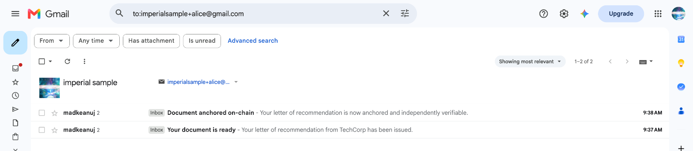

Presentation · recorded demo
CareerVault talk track
For the final presentation, narrate from demo-script.html instead: one narrator, timed cues, and the technical points left to the slides after the video. This page keeps the earlier take notes and live IDs.
One continuous take, 9 minutes 49 seconds. Play it and talk over it, pausing on the held screens. Each segment lists what is on screen and two or three points to make. The timestamps come from the final take (16 Nov 2026), to within a few seconds.
Pre-show checklist
- Play the video from a local file (
demo-recording/out/careervault-demo-prod-….mp4). Don't rely on venue Wi-Fi. - If someone may want to click the live site afterwards, wake it 10 minutes before:
curl -s -m 300 https://careervault-fsov.onrender.com/api/v1/health curl -s -m 120 https://careervault-ai-service.onrender.com/health
If the first command hangs, the Supabase project is paused. Restore it in the Supabase dashboard. - Turn on Do Not Disturb on the presenting laptop.
- Fallback: if the video won't play, open the screenshots in
demo-guide/img/.
The take
00:00
1 · The problem and the promise
Landing page, signed out
- A fake experience letter takes minutes to make and weeks to disprove. Background checks still mean calling HR.
- Three pillars: two people sign at the source, a public timestamp on Polygon, and anyone can verify in seconds.
- The sample on the right is the exact result a verifier sees: five checks.
00:40
2 · Alice requests an experience letter
Holder · Alice Holder
- The employee only requests. The organisation writes the content, which is why the result can be trusted.
- She picks a verified organisation and the manager who knows her work.
- She opts in to AI skill extraction. It's off by default, and we come back to it at the end.
01:24
3 · The manager signs, with a step-up
Manager · Marcus Manager
- Marcus fills in the facts. That record becomes the signed content.
- Signing asks for his personal details again. A wrong answer is refused, and five failures lock signing for 15 minutes.
- The right answers unlock his personal key: PBKDF2 (600,000 rounds) derives it, an HMAC-SHA256 seal is made over the document bytes, and the organisation's RSA-2048 key signs the seal.
02:36
4 · HR co-signs and issues
HR · Hannah HR
- A different person has to approve. HR first re-checks that the bytes still hash to what the manager signed.
- HR adds her own seal and signature. Only now is the document issued.
- Everything is stored encrypted (AES-256-GCM envelope encryption), including the PDF.
Evidence: the Supabase Storage bucket holds only encrypted blobs, and the
documents table shows cvenc:v1:… ciphertext instead of readable content.04:00
5 · Alice shares it, and anyone verifies it
Holder · Alice Holder
- A real email has just landed in her Gmail (show the still from the slide).
- She downloads the PDF and creates a free share link. The recruiter needs no account.
- Verification recomputes the hash, both seals and both signatures on the server. Five checks, all green. The on-chain badge still reads "pending", and that doesn't affect validity.
Evidence (slide, not in the video): the real emails in
imperialsample@gmail.com.
05:42
6 · Anchoring on Polygon
Org admin · Olivia Admin
- Every night (or with "Anchor now"), issued documents are hashed into one Merkle tree. Only the 32-byte root goes on-chain, never any personal data.
- One transaction per batch, however many documents it holds.
- We paste the root into PolygonScan's
verifyRoot. The chain itself answers "exists: true", not CareerVault. - Verifying again shows the same verdict, now timestamped on-chain. The chain is a receipt, never a condition.
Evidence: the anchor transaction, and the
verifyRoot read on PolygonScan (contract 0x483f…B12a, Polygon Amoy).07:12
7 · Revocation
HR · Hannah HR
- HR revokes Bob's letter with a reason. The register is authoritative, so verification says "Revoked" immediately.
- A
DocumentRevokedevent then follows on the contract, as a public trail.
Evidence: the contract's Events tab on PolygonScan.
08:12
8 · Organisation oversight
Org admin · Olivia Admin
- Members and their roles. Signers enrol their own keys, and an admin can reset someone else's but never their own.
- The audit log records every sign, issue, verify and revoke.
08:36
9 · Built on top: matching on verified evidence
Recruiter · Riya Recruiter, then Holder · Alice Holder
- Keep this short. Once credentials are trustworthy, you can build on them.
- A recruiter's opening is matched only against consented, verified documents, and every score has a plain "why".
- Alice controls discovery and sees which skills were extracted.
Be honest if asked: the ranker is a transparent baseline. It isn't trained on real hiring outcomes; that's future work.
Live documents (production)
| Document | ID |
|---|---|
| Alice · Salary Certificate | bf40ef22-fb83-47ba-81dd-3764f36779de |
| Alice · Letter of Recommendation | 29c3d2f1-9f73-4f69-9639-2f49b6723735 |
| Alice · Experience Letter (issued during the take) | 3dcaa946-7590-45ba-961b-e5f9cff5c4e4 |
| Bob · Experience Letter (revoked during the take) | aad6c1d4-3497-49f1-b239-fb891f2ad765 |
| Background anchor (Polygon Amoy) | 0x082068d3…337ccb |
| The take's anchor | 0x38542f20…d22b66 |
| Bob's revocation on-chain | 0xf95be07d…44a973c |
| Reset and recorded on 16 Nov 2026. At about 03:36 the Supabase table view flashes "Unable to find your table" for three seconds before the documents table opens; talk over it. | |
If you're asked about…
| Billing, the Verifier API, bulk issuance | Future scope, deliberately cut to keep the story clear. See SCOPE.md. |
| "Is the server trusted?" | Yes: it is a custodial attestation. Two people act and each seal is personal, but the organisation key and the master key are held by the service. Independent personal signatures are future work. |
| "Why not put documents on-chain?" | Personal data must stay erasable. The chain only holds a hash root, as a public timestamp. |